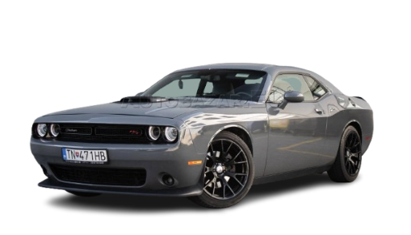
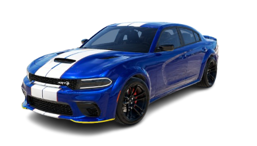
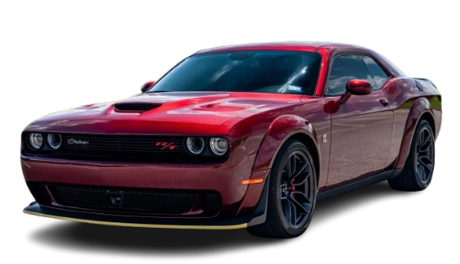
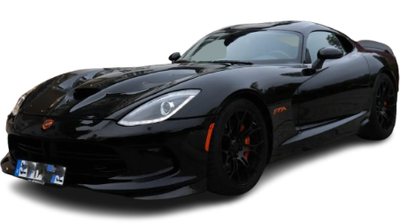
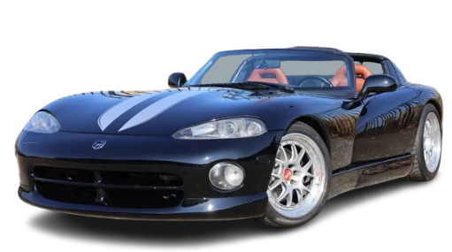
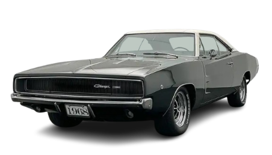

Kilometraža: 102.442 km
Godina proizvodnje: 2017.
Tip motora:5.7 V6
Snaga motora: 277 kw / 376 KS
Vrsta goriva: BENZIN

Kilometraža: 10.234 km
Godina proizvodnje: 2025.
Tip motora:5.0 V6
Snaga motora: 277 kw / 376 KS
Vrsta goriva: BENZIN

Kilometraža: 50.564 km
Godina proizvodnje: 2019.
Tip motora: 6.4 V8 HEMI
Snaga motora: 361 kw / 492 KS
Vrsta goriva:BENZIN

Kilometraža: 37.234 km
Godina proizvodnje: 2014.
Tip motora: 8,4 Liter V10
Snaga motora: 485 kW kw / 659 KS
Vrsta goriva: BENZIN

Kilometraža: 200.567 km
Godina proizvodnje: 1996.
Tip motora: 5.5L Ti-VCT V10
Snaga motora: 294 kw / 400 KS
Vrsta goriva: BENZIN

Kilometraža: 300.142 km
Godina proizvodnje: 1968.
Tip motora:451Ci V8
Snaga motora: 302 kw / 411 KS
Vrsta goriva: BENZIN